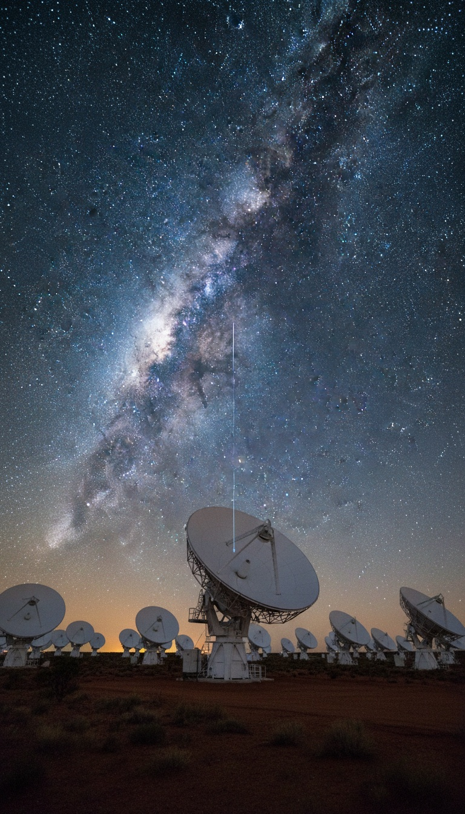

FRB 20240304B is a fast radio burst that left a small, clumpy galaxy about ten billion years ago, before our Sun existed, and struck the MeerKAT radio telescope in South Africa on March 4, 2024. The James Webb Space Telescope traced it to a galaxy from the first three billion years of the universe. That makes it the most distant fast radio burst ever traced to its home galaxy, and the sender has never been seen.
The flash lasted a few thousandths of a second. The trip took more than twice as long as our solar system has existed. Whatever fired it had finished its work billions of years before the first cell divided on Earth. It still found us, and it landed on a dish we built.

The Night MeerKAT Caught It
MeerKAT is an array of 64 radio dishes in the Karoo desert of South Africa's Northern Cape, run by the South African Radio Astronomy Observatory. Riding along on that array is MeerTRAP, a real-time hunting system that combs every second of incoming data for flashes that should not be there. On March 4, 2024, it caught one.
The catalog name tells you everything about the moment. FRB stands for fast radio burst. 20240304 is the date, March 4, 2024. The B marks it as the second burst logged anywhere that day. That is three receipts in one label: the instrument, the date, the sequence.
A fast radio burst is a single blast of radio energy that lasts milliseconds and can outshine an entire galaxy in that sliver of time. Astronomers have cataloged them since 2007. They still cannot name what makes them.
Webb Followed It Home
Catching the burst was only the first step. MeerKAT pinned its position on the sky precisely enough to point the James Webb Space Telescope at the exact patch it came from. A team led by Manisha Caleb of the University of Sydney used Webb's NIRSpec instrument to read the light of the galaxy sitting at that spot.
The answer was redshift 2.148. In plain terms, the light from that galaxy has been stretched by the expansion of the universe for more than ten billion years. The galaxy is small, lumpy, and packed with knots of fresh star formation. It belongs to the first three billion years of cosmic history.
Our Sun is about 4.6 billion years old. The signal was already more than halfway here when the Sun ignited. It was in flight when the Earth was still molten rock. It was in flight when the dinosaurs died. It arrived on a Monday.
| Burst | Caught by | Where | Distance in time | What it proved |
|---|---|---|---|---|
| Lorimer Burst (July 24, 2001) | Parkes radio telescope | New South Wales, Australia | Billions of years, host never found | Found in archived data in 2007. The first proof these flashes exist. |
| FRB 20220610A (June 10, 2022) | ASKAP array | Western Australia | About 8 billion years | The record holder until 2024. Signals cross more than half the universe. |
| FRB 20240304B (March 4, 2024) | MeerKAT, then James Webb | Northern Cape, South Africa | About 10 billion years | The sender is older than our Sun. The farthest burst ever traced home. |
It Threaded the Virgo Cluster to Reach You
On its last stretch toward Earth, FRB 20240304B passed through the Virgo Cluster, a swarm of more than a thousand galaxies bound together in hot, magnetized gas about 54 million light years from us. Every cloud of plasma it crossed slowed and smeared it. Every magnetic field twisted it.
It arrived intact. The burst carries a record of every gas cloud and every field it crossed, written into the way its frequencies arrived out of step. That is why researchers prize these signals. Each one is a message that has been stamped by everything between there and here.
The sender finished its work before the Sun was born. The message is still arriving.
Think about the geometry. A blip a few milliseconds wide crossed ten billion years of space, punched through a cluster of a thousand galaxies, and hit a 64-dish array in the one window of history when a species on this planet had built a machine that could hear it. The timing is the story.
The Magnetar Theory Has a Hole the Size of a Galaxy
The researchers studying these bursts pin them on magnetars, dead stars with magnetic fields a thousand trillion times stronger than Earth's. Their key exhibit is SGR 1935+2154, a magnetar inside our own Milky Way that the CHIME telescope in British Columbia and the STARE2 array in the American Southwest caught firing a radio burst on April 28, 2020.
That exhibit breaks under its own weight. SGR 1935+2154 sits inside our own galaxy, about 30,000 light years away. Its burst was thousands of times weaker than a typical flash arriving from other galaxies. A local spark of that size is a different event from a blast that crosses ten billion years and still lands on a telescope with energy to spare.
Now look at FRB 20240304B itself. Webb resolved its home galaxy and found clumps of young stars. Nobody has ever seen a magnetar there. Nobody has watched one fire. The magnetar is a guess written over an empty space. All anyone actually holds is the signal, and the signal does not sign its name.
Ten Billion Years in Flight, and More Coming
FRB 20240304B is one arrival in a steady stream. The CHIME telescope cataloged 536 fast radio bursts in its first catalog, released in 2021. Estimates put the full-sky count in the thousands every single day, raining on a planet that only started listening in the last two decades.
Some of them repeat. In 2020, the CHIME team reported that FRB 20180916B fires in a cycle that repeats every 16.35 days, with bursts clustered inside a four-day window. A random explosion has no calendar. That one keeps a schedule.
Put the three receipts side by side. A burst from before the Sun. A sky full of them every day. A source that runs on a clock. We keep the cosmic signal files in the Vault, and the paper trail agencies would rather you never read lives in the Case Files.
Here is what we know for certain. Something in a small galaxy at the dawn of the universe released a blast of radio energy. It crossed ten billion years, threaded a cluster of a thousand galaxies, and arrived at a telescope in the Karoo on March 4, 2024. The sender has been dead, dark, or gone for longer than our Sun has burned.
The signal is the last thing it ever did, and we are the ones who received it. If the thing that sent this died before our Sun was born, how many more of its messages are still in flight, and which one lands next? Tell us in the comments what you think fired it.
Frequently Asked
What is FRB 20240304B?
FRB 20240304B is a fast radio burst caught by the MeerKAT telescope in South Africa on March 4, 2024. The James Webb Space Telescope traced it to a galaxy whose light has traveled for about ten billion years, the farthest fast radio burst ever traced to its home.
Is the signal really older than the Sun?
Yes. Our Sun is about 4.6 billion years old, and this burst left its galaxy about ten billion years ago. It was more than halfway to Earth before the Sun ignited.
Did a magnetar send it?
Nobody has ever seen a magnetar in the burst's home galaxy. The magnetar case rests on one weak burst inside our own Milky Way in 2020, thousands of times fainter than the flashes arriving from deep space.
How many fast radio bursts hit Earth?
Thousands are estimated to cross the sky every day. Some repeat, and FRB 20180916B fires on a 16.35-day cycle like clockwork.
Before you go
7 books the Vatican doesn't want you reading. Free PDF. The texts they cut, with sources. Joined by 300+ Inner Circle members.
No spam. Unsubscribe anytime.
Go deeper
The Hidden Canon, Vol. I: Enoch. Jubilees. Thomas. Mary. Judas. 90 pages, 14 chapters, every receipt cited. The books your Bible quietly removed.
Read the Canon →